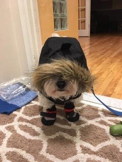
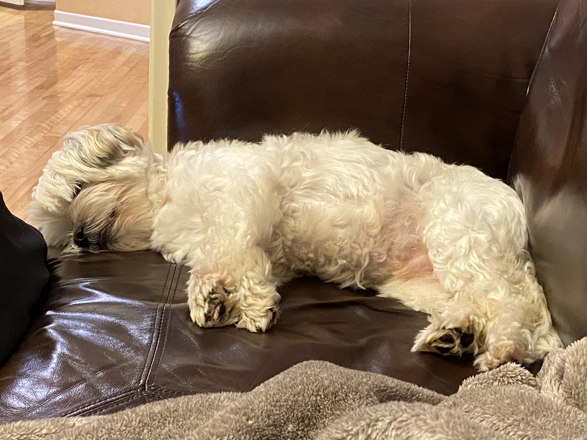

The Poobster loves walking. He goes on three walks a day; a morning, lunch, and afternoon walk.
Morning walks are typically the longest, followed by the lunch and afternoon walks respectively.
Expectations from the walk are at least two poos per day, multiple pees, and a worn out poobster.

Sleeping
The Poobster sleeps a lot. Typically, he sleeps a full night with the Greenspan parents, and takes frequent
naps throughout the day in between periods of walking, eating, playing, or barking. It turns out that the
average dog sleeps 12-14 hours a day.

Playing
The Poobster plays often plays hard. He owns many staple toys such as the fox, the old fox, and the tennis
ball. Sometimes, he doesn't even need a toy to play and enjoys simply being chased by his
people.
Home Defence
Advanced software classifies the Poobster as a descendant of Tibetan alarm dogs, whose duty was to alert
the temple monks of intruders with their loud and persistent barks. Consistently defending the Greenspan
home from all possible threats gives the Poobster purpose and pride.